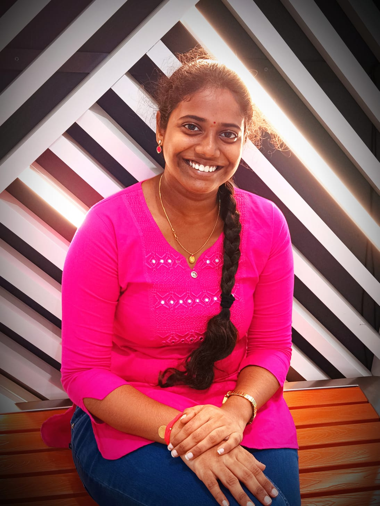

Hello, I'm Kurra Mythri Sri
An Engineering Student Specialized in Computer Science And Engineering (CSE)
View My WorkAbout Me
I am a pre-final year student at Dhanekula Institute of Engineering and Technology, passionate about computer science and driven by a desire to make a tangible impact in the technology field. With a proven track record of academic excellence, reflected in my impressive 9.3 CGPA by JNTUK Board of Education, I embrace the philosophy of "Learn by doing, not by watching." This proactive approach to skill development, combined with a solid academic foundation, positions me as a dynamic contributor in any professional setting. I have experience in coding languages such as C, C++, as well as front-end web development technologies like HTML, CSS, and JavaScript. My goal is to leverage these skills to create impactful solutions in technology, tackling diverse technical challenges with adaptability, intellectual curiosity, and effective problem-solving. Beyond academics, I actively engage in extracurricular activities, serving as an NSS volunteer and demonstrating leadership as the School Pupils Leader from 7th to 9th grade. These experiences have honed my interpersonal skills and teamwork abilities. In my free time, I enjoy Spending time with Friends and Family , which keeps me balanced and inspired. I am eager to bridge the gap between classroom learning and real-world application, looking forward to internships that align with industry expectations.
Projects

Project 1: Image Classification
For my Image Classification project, I used Google Teachable Machine, a user-friendly tool for training machine learning models. Completing this project not only enhanced my technical skills in machine learning but also strengthened my ability to effectively visualize and interpret data.
View ProjectProject 2: Data Visualization with Power BI
I completed a task on Power BI - Data Visualization,Using the dataset "agriculture_production_data," I created visualizations to showcase insights about agricultural performance. This project strengthened my data analysis skills and highlighted the importance of visualization in decision-making.
View ProjectSkills
- HTML
- CSS
- JavaScript
- C
- CPP